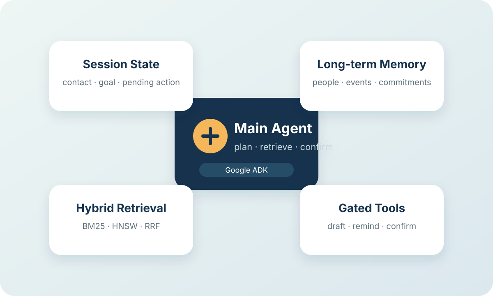
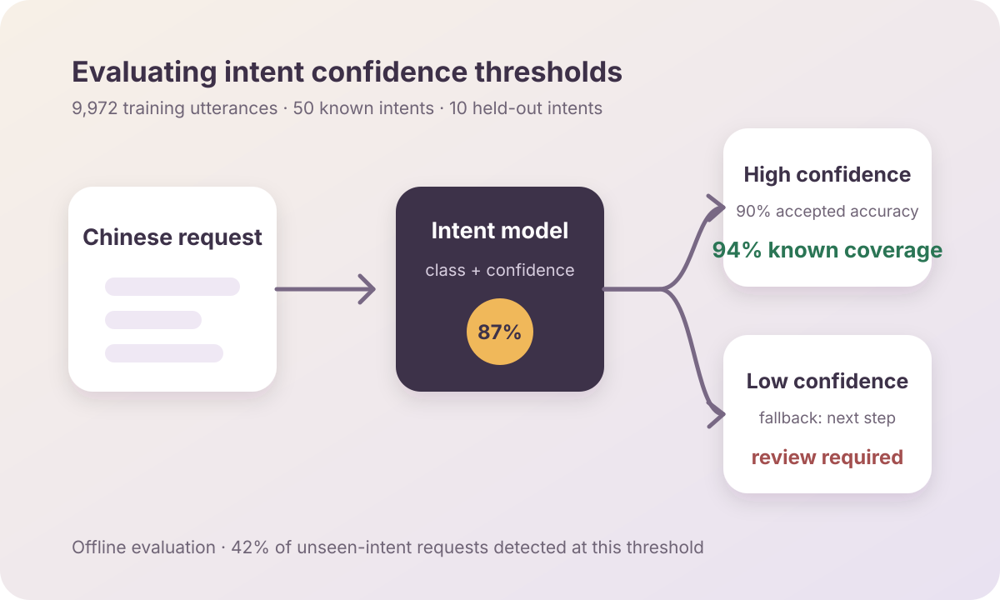
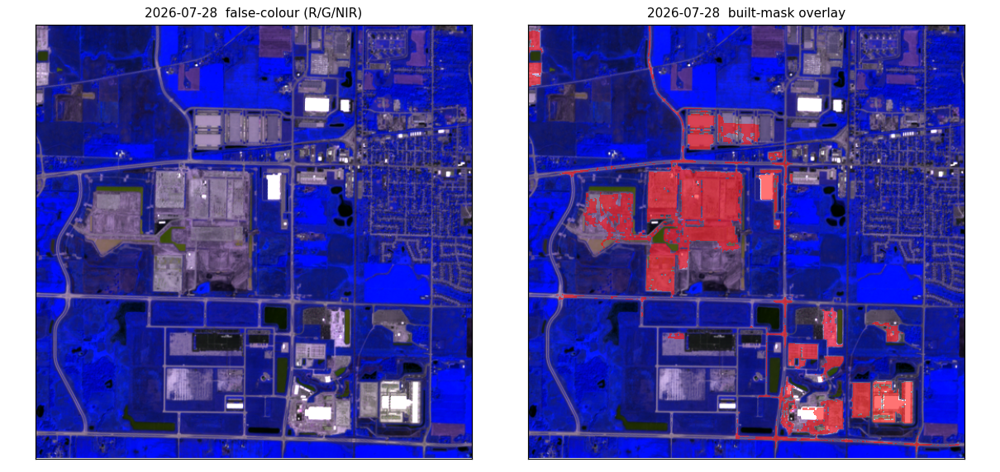
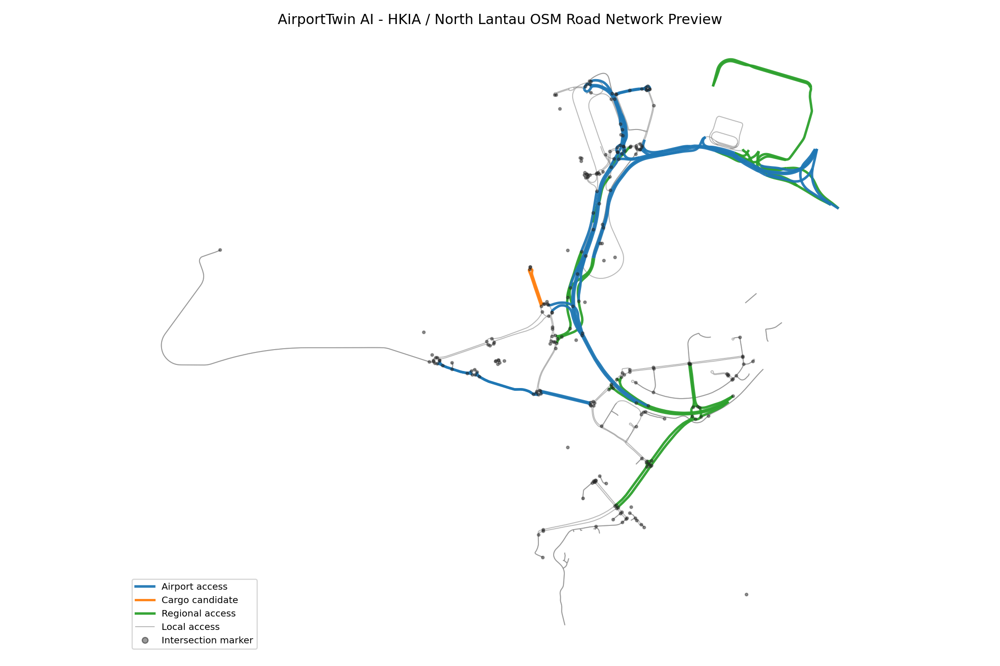

Understand the decision together
I start by listening to the people closest to the work: what they need to decide, what information they have, and where they need help. We can then agree on a useful first step and how to assess it.
Hi, I'm Zijun. I build AI applications that help people find useful information and make informed decisions. My background combines data analysis and product delivery in China with quantitative research at the University at Buffalo.

I enjoy working with people to understand the decisions they need to make and the constraints they work within. Those conversations help me turn an open-ended question into a workflow we can test together. I want people to be able to see where an answer came from and decide how to use it.
I've built and deployed four LLM applications, taking responsibility for product design, data models, and implementation through to deployment and debugging. In Social Memory Copilot, I focused on remembering conversational context, showing the sources behind an answer, and giving users control over proposed memory updates and reminders.
My work with Python and SQL includes an NLP and agent-based modeling thesis, quantitative analysis for an NSF-funded study, and two years of KPI definition and reporting. These experiences taught me to check assumptions and explain what the data supports, so colleagues can use the results with a clear understanding of their scope.
Across more than six government digitalization projects, I worked with clients to clarify requirements and agree on metrics, then coordinated delivery with engineering, data, and design colleagues. I learned to make space for questions, discuss trade-offs openly, and adapt an explanation to the person using it.
I started in geographic information science and remote sensing, using satellite imagery for public planning and environmental assessment. Comparing estimates with independent observations remains a useful part of how I approach data problems today.
I'm exploring applied AI and data science opportunities where I can work closely with the people using what we build. I'm open to relocation and on-site work. I work in Mandarin and English, and speak conversational Cantonese.
Focus areas
I start by listening to the people closest to the work: what they need to decide, what information they have, and where they need help. We can then agree on a useful first step and how to assess it.
I make retrieval decisions, model routing, and tool permissions explicit and testable. Source references help users review an answer, while confirmation steps give them control over changes and reminders.
I compare alternatives using retrieval quality, routing accuracy, or behavior on unfamiliar requests. I document the dataset and configuration alongside each result, then use error analysis to decide what needs attention next.
When a question returns regularly, I work toward a reusable tool or workflow. Shared metric definitions, scripts, and scheduled agents can help a team spend less time gathering information and more time deciding what to do with it.
Built and deployed four LLM applications from initial product decisions through post-launch debugging. The most complete is Social Memory Copilot on Google ADK, where I implemented scoped tool access, selective retrieval, cited sources, separate session and long-term memory, confirmation before write actions, and fallback when a component fails. Across the four products, I also look after data models, guardrails, evaluation, and monitoring.
Built scheduled workflows for my own study of the AI industry in the US and China. Agents collect weekly industry updates and consensus data; I review company disclosures and develop the interpretation myself.
University at Buffalo, SUNY
Led the quantitative analysis for an NSF-funded study of community resilience during extreme winter storms. I worked with survey, behavioural, and spatial data to understand how location, information exposure, and online communities affect mutual-aid decisions.
Designed the analysis workflow from data preparation through modelling and validation, then translated the results into a clear account for the research team and the funder.
Beijing Yiyun Technology Co., Ltd.
Led business analysis for more than six government digitalization projects, mainly monitoring and early-warning platforms. I worked with stakeholders to define KPIs and wrote the supporting SQL and analysis workflows. When reports differed, we checked source data and calculation rules to agree on a consistent interpretation.
Replaced repeated manual data pulls with Python scripts and reusable queries. I coordinated a team of more than ten across engineering, data, design, and marketing, and adapted the same analysis for both technical and non-technical decision-makers. Several of our recommendations were adopted.
Beijing Satimage Technology Inc.
Used machine-learning classification and spatial analysis on large geospatial datasets for public planning and environmental assessment. The work included developing and validating satellite-based estimates that combined imagery with environmental indicators.
Managed delivery from the first client conversation through analysis, reports, presentations, and recommendations people could act on.

Social Memory Copilot helps users pick up conversations with context: past discussions, commitments, and communication preferences. One coordinating agent manages session state, with separate components for retrieval and action confirmation. It cites the memories used in an answer and asks users to confirm agent-proposed writes, deletions, and reminders.
On 20 synthetic queries, BM25 and vector search with RRF and reranking improved Recall@5 from 0.682 to 0.889 in the local full configuration. The lighter Vercel configuration scored 0.757 on the same set. The retrieve-or-not component reached F1 0.963 on 28 labeled synthetic cases, and the repository reports 354 passing unit and integration tests. The demo uses synthetic data; evaluation with real users is a future step.
Live demo → On GitHub →
I fine-tuned a Chinese encoder on 9,972 training utterances across 50 intents, reaching 87% test accuracy on known intents. Ten additional intents were held out of training to evaluate how the model responds to unfamiliar requests.
At a selected confidence threshold, the model accepted 94% of known requests with at least 90% accuracy, while detecting 42% of unseen-intent requests. These results help define a routing policy and identify where additional checks are needed. A larger-model fallback or dedicated detection layer remains a next step.

Since early 2026, I've been studying how economic value moves through the AI industry, including chips, cloud infrastructure, models, and applications in the US and China. For my own study, scheduled agents collect weekly industry material and consensus data. I read company disclosures and develop the interpretation myself, connecting technical choices with the business questions behind them.

Stock Analyzer brings live US, Hong Kong, and A-share market data into one research workflow for fundamentals, technicals, valuation, and sentiment. I designed the product, data flow, S&P 500 screener, and AI value-chain map. The LLM layer can switch providers automatically, which keeps the core service usable when one model is unavailable.
Live demo →
KCAS is a set of four connected frameworks I use for personal research and capital-allocation decisions. They separate asset quality from price, organize evidence, compare holdings by role and opportunity cost, and review whether a project merits continued attention. Writing down the reasoning makes it easier to revisit a decision as new information arrives.
On GitHub →
For my master's thesis, I filtered 78,116 sustainability-related reviews from the Yelp Open Dataset, used LDA to identify themes, and scored sentiment with multilingual BERT. Those results seeded a 500-agent network model in Mesa. Across three scenarios and a no-intervention baseline, I tested a simple question: when does a sustainability message spread through a community, and when does it stop? I designed, implemented, and interpreted the study independently.

Bridge the Gap helps people explore unfamiliar food and cultural practices in English and Chinese. AI supports translation, and community answers are ranked using endorsements, Wilson-score confidence bounds, and freshness. People familiar with the relevant culture contribute context, and community consensus can update the AI's initial label.
Live →
Inner Order OS is a reflection product that asks one question at a time, giving people space to think through their own answers. I designed the product, prompts, and structured-output checks, with retrieval to bring relevant past entries into the conversation. It is deployed and preparing for alpha testing, with external access not yet open.
Live → Architecture →
Hyperscalers report AI capital expenditure quarterly; Sentinel-2 photographs many construction sites every five days. Orbital Capex explores whether those images can provide an independent, weekly signal by measuring built surfaces and cleared ground at US datacentre sites. The work has already exposed two useful limits: the standard NDBI index misses high-reflectance membrane roofs, and single images cannot reliably separate grey roofing from dry soil, so the pipeline uses persistence over time instead. Parcel boundaries come from county tax records and are checked against reported acreage. The first series moves with the site's public construction timeline, but the 10 m imagery still mixes roofs with roads and parking. The project therefore remains clearly labelled “Building” until a timestamped prediction can be tested against reported capex.
On GitHub →
AirportTwin AI is a GIS-to-3D prototype for the roads around Hong Kong International Airport and North Lantau. It cleans public OpenStreetMap data, creates scene-ready geometry, and organises the result into a USD-ready structure for future mobility simulation.
On GitHub →Analysed consumer reviews in Tableau to connect sustainability themes and sentiment patterns with practical KPIs and adoption recommendations.
Shaped requirements and solution designs for forest-fire and meteorological-risk systems, bringing multi-source data into dashboards and decision-support rules.
Interviewed stakeholders, mapped how the organisation actually worked, and turned those conversations into requirements and a staged implementation roadmap.
Designed a precision-irrigation concept that combines satellite observations, weather data, and expert rules into recommendations a grower could use.
Undergraduate research using hyperspectral imagery and machine learning to detect drought stress in winter wheat.
University at Buffalo, SUNY (USA)
Focused on spatial statistics, machine learning, and simulation. My thesis combined NLP analysis of 78,116 reviews with an agent-based model of how a message moves through a network; it became the foundation for much of the modelling work shown here.
Huazhong Agricultural University (China)
Remote sensing, cartography, spatial databases, and programming for geospatial analysis.
Central China Normal University (China)
Completed alongside my GIS degree, with a focus on the human side of spatial questions: how people, cities, and land use affect one another.
If your team is exploring an AI or data problem, I'd be glad to hear what you're working on. I'm open to applied AI and data science opportunities, and always happy to compare notes with people building related tools. Email is the easiest way to reach me.